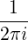
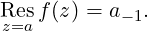
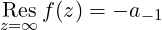
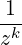

| Up | Next | Prev | PrevTail | Tail |
The residue Resz=af(z) of a function f(z) at the point a ∈ ℂ is defined as
|
Resz=af(z) =  ∮ f(z)dz, |
with integration along a closed curve around z = a with winding number 1.
If f(z) is given by a Laurent series expansion at z = a
| f(z) = ∑ k=−∞∞a k(z − a)k, |
then
|
 | (7.1) |
If a = ∞, one defines on the other hand
|
 | (7.2) |
for given Laurent representation
|
f(z) = ∑
k=−∞∞a
k  . |
The operator residue(f,z,a) determines the residue of f at the point z = a if f is meromorphic at z = a. The calculation of residues at essential singularities of f is not supported, as are the residues of factorial terms.2
poleorder(f,z,a) determines the pole order of f at the point z = a if f is meromorphic at z = a.
Note that both functions use the operator taylor in connection with representations (7.1)–(7.2).
Here are some examples:
| Up | Next | Prev | PrevTail | Front |